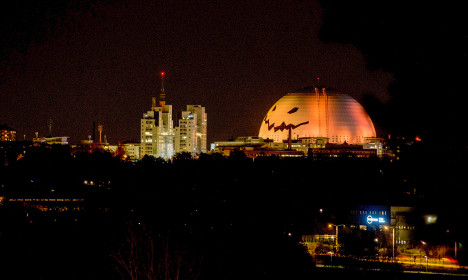

Halloween has only been celebrated in Sweden since the 1990s, and has rapidly become established here − not least as a result of smart commercial marketing. By the beginning of November, Sweden is enveloped in darkness and the long working weeks stretch away endlessly.
There are no public holidays or extended weekends in the calendar between the summer holiday and All Saints’ Day. Halloween heralds the schools’ autumn break and represents a welcome diversion in the gathering dark.
Text from Sweden.se